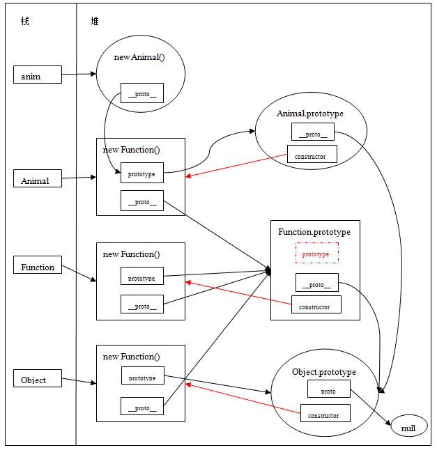

function Animal(){}
var anim = new Animal();
Function、Object、Prototype、__proto__内存关系图
Function.prototype 函数对象图内部表示 prototype 属性的红色虚框，只是为了说明这个属性不存在。
通过上图Function、Object、Prototype关系图中，可以得出一下几点：
- 所有对象，包括函数对象的原型链最终都指向了Object.prototype，而Object.prototype.__proto__===null，原型链至此结束。
- Object是一个函数对象，也是Function构造的，Object.prototype是一个普通对象，一般是个空对象。
- Object.prototype.__proto__指向null。
- Function.prototype是一个函数对象，前面说函数对象都有一个显示的prototype属性，但是Function.prototype却没有prototype属性，即Function.prototype.prototype===undefined，所以Function.prototype函数对象是一个特例，没有prototype属性。
- Object虽是Function构造的一个函数对象，但是Object.prototype没有指向Function.prototype，即Object.prototype!==Function.prototype。
prototype、constructor内存关系图(在Function、Object、Prototype关系图上加入constructor元素)：

上图中，红色箭头表示函数对象的原型的constructor所指向的对象。
注意Object.constructor===Function；本身Object就是Function函数构造出来的
如何查找一个对象的constructor，就是在该对象的原型链上寻找碰到的第一个constructor属性所指向的对象。